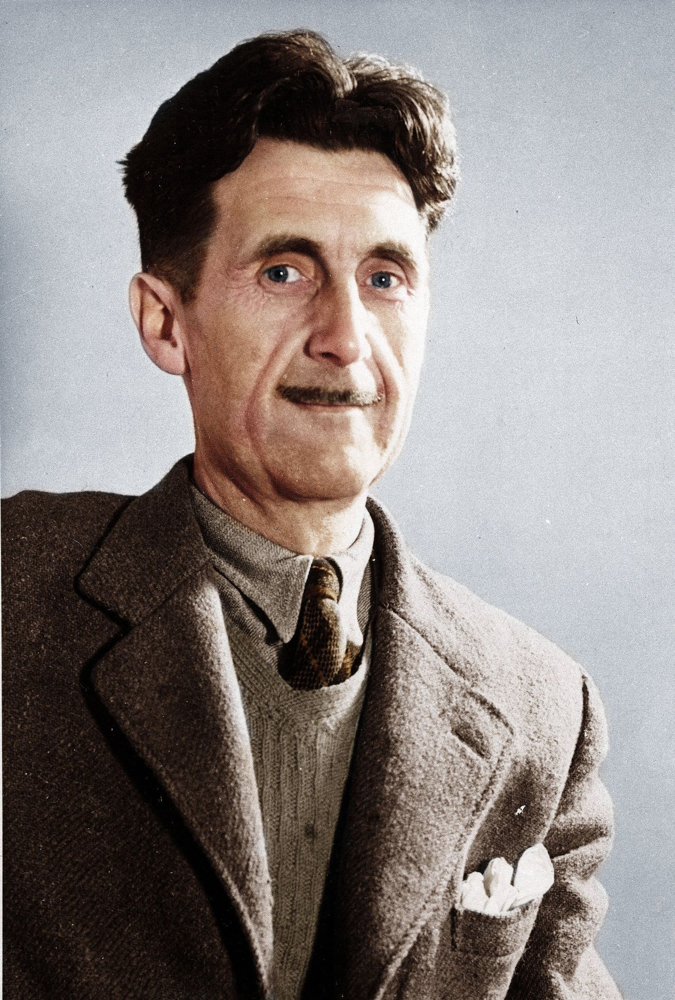

Biography
Eric Arthur Blair (25 June 1903 – 21 January 1950) was an English novelist, essayist, journalist, and critic who wrote under the pen name of George Orwell. His work is characterised by lucid prose, social criticism, opposition to totalitarianism, and support of democratic socialism.
Orwell produced literary criticism, poetry, fiction, and polemical journalism. He is known for the allegorical novella Animal Farm and the dystopian novel Nineteen Eighty-Four. His non-fiction works, including The Road to Wigan Pier, documenting his experience of working-class life in the industrial north of England, and Homage to Catalonia, an account of his experiences soldiering for the Republican faction of the Spanish Civil War, are as critically respected as his essays on politics, literature, language and culture.
Born in India, Blair was raised and educated in England from when he was one year old. After school he became an Imperial policeman in Burma, before returning to Suffolk, England, where he began his writing career as George Orwell—a name inspired by a favourite location, the River Orwell. He made a living from occasional pieces of journalism, and also worked as a teacher or bookseller while living in London. From the late 1920s to the early 1930s, his success as a writer grew and his first books were published. He was wounded fighting in the Spanish Civil War, leading to his first period of ill health on return to England. During the Second World War he served as a sergeant in the Greenwich Home Guard , worked as a journalist and, between 1941 and 1943, worked for the BBC. The 1945 publication of Animal Farm led to fame during his lifetime. During his final years, he worked on Nineteen Eighty-Four and moved between London and the Scottish island of Jura. Nineteen Eighty-Four was published in June 1949, less than a year before his death.
Orwell's work remains influential in popular culture and in political culture, and the adjective "Orwellian"—describing totalitarian and authoritarian social practices—is part of the English language, like many of his neologisms, such as "Big Brother", "Thought Police", "Room 101", "Newspeak", "memory hole", "doublethink", and "thoughtcrime".In 2008, The Times named Orwell the second-greatest British writer since 1945.